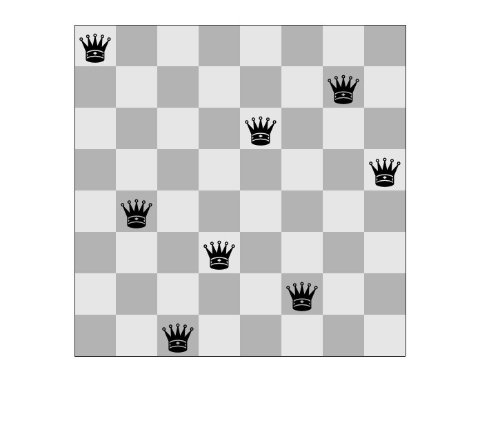
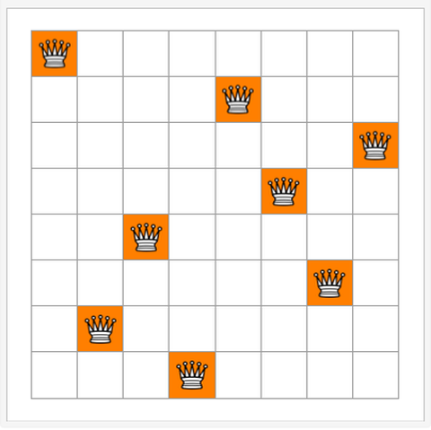

函数和方法
大多数代码都可以在类似shell的REPL接口中输入，如同正在编写脚本一样。但是，当你使用函数，向其传入或从中传出数据时，Julia的真正能力才体现出来。为了发挥多分派接口的强大功能，学习函数和方法成为Julia编程的基本需要。
没有一个产品级应用是在单个文件中使用顺序语句开发出来的。大多数程序员喜欢将程序分割成小块的可执行单元。这解决了两个问题。首先，它创建了可重用单元，这些单元可以在更大的程序中的不同位置被多次调用。其次，小单元可以很容易地进行单元测试。因此，它们提高了代码的可靠性。我们将尝试以编程的方式解决国际象棋中的8皇后问题，并在此过程中理解Julia中的函数。
8皇后问题
它是算法和人工智能领域的一个经典问题。目标是在满足不相互攻击的前提下，在棋盘上放置最大数量的皇后。下图给出了一种可能解。然而，这个解不是唯一的。我们将编写一个程序来解决8皇后问题。

在设计出问题的完整解决方案之前，我们必须有一个程序单元，作为输入信息，它接收两个皇后的位置，并输出皇后是否相互攻击。
两个相互安全的皇后
Julia中的这些小程序单元叫做函数。我们将创建一个函数，它接受两个皇后的输入位置，返回皇后的路径是否重叠则。以下是皇后互相攻击的条件。
皇后有相同的x或y坐标：$x₂ = x₁$或$y₂ = y₁$。
皇后彼此在对角线上，即：$|x₂ - x₁| = |y₂ - y₁|$。
如果两边的符号相同，就得到$x_1 - y_1= x_2 - y_2$。同样地，如果符号相反，我们会得到$x_1 + y_1= x_2 + y_2$。
根据观察，我们在Julia中有以下函数:
julia> function attacks(x1, y1, x2, y2) if x1 == x2 return true elseif y1 == y2 return true elseif x1 - y1 == x2 - y2 return true elseif x1 + y1 == x2 + y2 return true else return false end endattacks (generic function with 1 method)julia> attacks(1, 2, 4, 5)truejulia> attacks(1, 2, 4, 6)false
function...end是定义函数的分隔符。return语句用于返回函数的最终输出。一个函数可以有多个返回语句。上面的函数有5个return语句，返回的都是布尔值。
运算符
在前面的函数中，我们使用了几个运算符和变量。很明显，+和-是两个数之间的加减二元运算符。==是比较两个值是否相等的运算符。在Julia中，运算符被视为普通函数，它们可以返回一个值。==运算符返回布尔值，该函数仅由if条件和布尔返回值组成。我们可以用逻辑或(||)运算符的简单组合来重写这个函数。
julia> function attacks(x1, y1, x2, y2) return x1 == x2 || y1 == y2 || x1 - y1 == x2 - y2 || x1 + y1 == x2 + y2 endattacks (generic function with 1 method)
简洁格式
尽管我们推荐使用return关键字，但Julia函数对它不是强制的。如果未指定，end语句之前的表达式的值将作为函数的返回值返回。因此，下面是前面所述函数的另一种表示:
julia> function attacks(x1, y1, x2, y2) x1 == x2 || y1 == y2 || x1 - y1 == x2 - y2 || x1 + y1 == x2 + y2 endattacks (generic function with 1 method)
Julia进一步简化了函数，使其看起来更像一个数学表达式。同样的函数也可以写成:
julia> attacks(x1, y1, x2, y2) = (x1 == x2 || y1 == y2 || x1 - y1 == x2 - y2 || x1 + y1 == x2 + y2)attacks (generic function with 1 method)
上述格式只适用于函数体内只有一条语句的情况。如函数体内有多条语句，但仍想使用简洁格式，则可使用begin...end块定义复合表达式。然而，对于包含多个语句的函数，不建议使用简洁形式。下面的例子尽管是一个有效的Julia函数，但作为风格指南，还是不鼓励使用它。
julia> attacks(x1, y1, x2, y2) = begin if x1 == x2 return true elseif y1 == y2 return true elseif x1 - y1 == x2 - y2 return true elseif x1 + y1 == x2 + y2 return true else return false end endattacks (generic function with 1 method)
匿名函数
Julia中的函数可以像任何其他对象一样赋给变量。我们可以定义一个匿名函数，并通过下面的代码赋给变量attacks_var:
julia> attacks_var = (x1, y1, x2, y2) -> (x1 == y2 || y1 == y2 || x1 - y1 == x2 - y2 || x1 + y1 == x2 + y2)#1 (generic function with 1 method)julia> attacks_var(1, 2, 3, 4)true
attacks_var的行为类似于一个函数，但它实际上是一个变量，一个匿名函数被赋给了它，这为Julia提供了很大的灵活性。
输入参数
attacks函数有四个输入参数。函数的输入参数在Julia中也是一种数据类型，称为元组。元组是一个不可变集合，在Julia中指定逗号分隔的值时创建。它们也可以通过在圆括号中包含几个逗号分隔的值来表示。空元组可以用一个空括号表示，当元组只有一个元素时，必须在这个元素后面加一个逗号。
julia> 1, 2(1, 2)julia> a = ()()julia> typeof(a)Tuple{}julia> a = (1)1julia> typeof(a)Int64julia> a = (1,)(1,)julia> typeof(a)Tuple{Int64}julia> a = (2, 3)(2, 3)julia> typeof(a)Tuple{Int64, Int64}julia> a[1]2julia> a[1] = 5ERROR: MethodError: no method matching setindex!(::Tuple{Int64, Int64}, ::Int64, ::Int64)
可以看到，元组中的元素可以通过索引进行访问。但是，它的元素不能被修改。下面是一些基于变量位置从元组对变量进行多重赋值的示例。
julia> i, j = 1, 2(1, 2)julia> i1julia> j2julia> i = 1, 2 # i是一个元组(1, 2)julia> i(1, 2)julia> i, = 1, 2 # i是一个整数(1, 2)julia> i1
定数量输入参数
如果我们用5或3个输入参数调用方法会发生什么？
julia> attacks(1, 2, 3, 4, 5)ERROR: MethodError: no method matching attacks(::Int64, ::Int64, ::Int64, ::Int64, ::Int64) Closest candidates are: attacks(::Any, ::Any, ::Any, ::Any) at REPL[1]:1julia> attacks(1, 2, 3)ERROR: MethodError: no method matching attacks(::Int64, ::Int64, ::Int64) Closest candidates are: attacks(::Any, ::Any, ::Any, !Matched::Any) at REPL[1]:1
报告错误，说明函数仅定义了考虑4个输入参数的情况。但是，由于在函数定义中没有指定参数类型，程序默认将参数类型设置为Any，因此该函数可以接受任何类型的输入数据。
输入参数是可选的。下面是一个没有输入参数的函数:
julia> function hello_world() println("Hello world!") endhello_world (generic function with 1 method)julia> hello_world()Hello world!
变数量输入参数
可以在Julia中定义接受可变数量参数(varargs)的函数。参数使用模式匹配和递归进行分配。以下是一些例子:
julia> mysum(x, y...) = x + mysum(y...)mysum (generic function with 1 method)julia> mysum(x) = xmysum (generic function with 2 methods)julia> mysum(1, 2)3julia> mysum(1, 2, 3)6julia> mysum(1, 2, 3, 4, 5, 6, 7)28
让我们看看另一个从输入参数计算最大值的函数。
julia> mymax(x, y...) = mymax(x, mymax(y...))mymax (generic function with 1 method)julia> mymax(x, y) = x > y ? x : ymymax (generic function with 2 methods)julia> mymax(1, 2, 3)3julia> mymax(4, 10, 3, 2, 1)10
当你指定mymax(x)时会发生什么？当然，它必然给出一个错误，因为没有只接受一个参数作为输入的函数。
julia> mymax(1)ERROR: MethodError: no method matching mymax() Closest candidates are: mymax(!Matched::Any, !Matched::Any) at REPL[2]:1 mymax(!Matched::Any, !Matched::Any...) at REPL[1]:1
它可以很容易地通过添加一个输入参数的函数来修复，如下所示:
julia> mymax(x) = xmymax (generic function with 3 methods)julia> mymax(1)1
让我们看看mymax定义了多少个方法。
julia> methods(mymax)# 3 methods for generic function "mymax": [1] mymax(x) in Main at REPL[1]:1 [2] mymax(x, y) in Main at REPL[2]:1 [3] mymax(x, y...) in Main at REPL[1]:1
我们有1个、2个和可变数量输入参数共3个mymax方法。
默认值
让我们稍微修改一下mymax函数，这样就不需要创建单参数函数了。
julia> mymax(x, y...) = mymax(x, mymax(y...))mymax (generic function with 1 method)julia> mymax(x, y=x) = x > y ? x : ymymax (generic function with 3 methods)julia> methods(mymax)# 3 methods for generic function "mymax": [1] mymax(x) in Main at REPL[2]:1 [2] mymax(x, y) in Main at REPL[2]:1 [3] mymax(x, y...) in Main at REPL[1]:1julia> mymax(1)1
我们只引入两个函数：一个有可变数量的参数，另一个有两个参数，但其中一个带有默认值。系统内部生成了3个函数，只有一个参数的函数映射到了有两个参数但其中一个是默认值的函数。
汇集和分散
在函数定义中对一个输入参数使用运算符...时，其行为称为汇集。它尝试接受多个输入，并将它们表示为单个元组变量。
julia> function test(args...) println(typeof(args)) endtest (generic function with 1 method)julia> test(1, 2, 3, 4.0)Tuple{Int64, Int64, Int64, Float64}
因为args是一个元组，所以可以通过索引来访问参数值。一些实现可以使用递归来处理变输入参数数量函数，就像我们前面定义的mymax和mysum方法一样。
让我们回到皇后攻击函数。皇后被表示为$x$和$y$位置的元组是很自然的，例如$(1,2)$。然而，我们创建的函数有4个参数。在这种情况下，分散会有所帮助。在函数调用中，...运算符将目标集合展开，并将单个值作为函数的输入传递。
julia> q1 = (1, 2)(1, 2)julia> q2 = (3, 4)(3, 4)julia> attacks(q1..., q2...)true
虽然汇集和分散为Julia中的函数式编程提供了显著的好处，但它们不是性能友好的运算符。因此，在需要时，必须谨慎地使用它们。
返回值
所有Julia函数都显式或隐式地返回一个值。我们在前面定义的各种攻击函数中看到了这些示例。一个函数可以什么都不返回吗？这样的函数仍然会返回nothing，它是一个Nothing类型的单例实例。前面介绍的hello_world()函数就是一个类似的例子。
julia> a = hello_world()Hello world!julia> typeof(a)Nothing
类型安全
让我们再次以最初冗长的攻击函数为例，但对其进行了一些小修改。我们从函数中删除返回false的else语句。
julia> function attacks(x1, y1, x2, y2) if x1 == x2 return true elseif y1 == y2 return true elseif x1 - y1 == x2 - y2 return true elseif x1 + y1 == x2 + y2 return true end endattacks (generic function with 1 method)julia> a = attacks(1, 2, 3, 4)truejulia> b = attacks(1, 2, 3, 5)julia> typeof(a), typeof(b)(Bool, Nothing)
你可能会发现在代码中使用nothing代替false是可以接受的。但是，由于可能存在类型稳定性问题，这种做法是不可取的。根据函数的输入，函数调用者可能得到Bool值或Nothing值。这种类型的不一致性可能导致调用者不能为返回值分配适当的资源，并且可能进行许多超出需要的额外分配，或者可能不得不将Any作为返回类型。我们将在性能一章中详细讨论代码性能受到类型稳定性问题影响的实例。从函数返回类型一致的返回值通常是一个好方法。其次，类型安全问题不能完全消除。它们并不总是对性能产生不利影响。Julia提供了识别它们的工具。我们稍后将详细讨论。返回类型并不是类型安全问题的唯一来源。由于Julia类型是可选的，各种输入参数以及输入参数与常量表达式的相互作用也会导致类型安全问题。我们将在性能管理一章中用实例介绍其中一部分内容。
多返回值
大多数编程语言都坚持一个函数只返回一个值。这同样适用于Julia。使用Julia的元组类型，可以返回多个值。我们将扩展攻击函数，将路径相交的原因作为另一个返回值同布尔值一起返回给我们。
julia> function attacks_with_reason(x1, y1, x2, y2) if x1 == x2 return true, :x elseif y1 == y2 return true, :y elseif x1 - y1 == x2 - y2 return true, :diag elseif x1 + y1 == x2 + y2 return true, :xdiag else return false, :na end endattacks_with_reason (generic function with 1 method)julia> attacks_with_reason(1, 2, 3, 4)(true, :diag)julia> attacks_with_reason(1, 2, 3, 1)(false, :na)julia> attacks_with_reason(1, 2, 3, 2)(true, :y)julia> attacks_with_reason(1, 2, 2, 1)(true, :xdiag)julia> attacks_with_reason(1, 2, 1, 3)(true, :x)
递归
递归是函数式编程中常用的编程范式，在Julia中也同样流行。在递归编程中，要遵循以下过程:
函数应该在问题的一个子集内调用自己。
必须有一个确定的使递归终止的条件。
对结果进行集合以得到最终输出。
我们将应用所有这些条件来解决8皇后问题。目前，我们已经找到了判断皇后是否会攻击其他皇后的一种机制。我们将通过递归地从上到下向每一行添加一个皇后来解决这个问题。假设我们考虑一个大小为8×8的棋盘。
首先考虑第1行，在第1行起始列位置1上添加一个皇后。
然后在第2行添加一个皇后。
a) 我们从列1开始不断增加列序号，直到找到一个不受其他皇后攻击的列为止。这里将使用前面开发的攻击函数来进行检验。
b) 如果可以放置皇后，则马上放置并递归调用这个函数来检查是否可以将皇后放置在第3行、第4行、...，直到第8行。
c) 如果放置成功，则返回函数结果，不成功则递归地转回紧邻的上一行，继续寻找下一个可以放置的列。
如果能够在最后一行添加一个皇后，则返回
true。如果在任意一行中添加皇后失败，则返回
false。使用递归方法的变参数数量的函数非常有用，它提供了一种跟踪已添加的所有列的自然机制。
所提出的方法并不局限于8皇后问题，而是可以用于N皇后问题。
julia> attacks(x1, y1, x2, y2) = (x1 == x2 || y1 == y2 || x1 - y1 == x2 - y2 || x1 + y1 == x2 + y2)attacks (generic function with 1 method)julia> function queens(N,xs...) currentrow = length(xs) + 1 # 当前要检验的行 if currentrow > N # 如果成立，则所有行都检验成功了 println("Final Positions: ",xs) # 按行打印最终列位置 return true # 返回成功解决问题 end for i = 1:N # 检验每一列 res = false # 初始设置皇后不相互攻击 for j = 1:currentrow-1 # 对当前行与前面以完成的各行进行攻击检验 (res = attacks(currentrow, i, j, xs[j])) && break # 对当前行的i列与前面各行进行攻击检验，攻击返回true并结束检验，不攻击返回false并继续检验直到所有行都检验完毕 end res && continue # 攻击，则检验当前行的下一列 v = queens(N,xs...,i) # 不攻击，则将该列（按顺序首先找到的可行列）加到列位置列表中，并继续对下一行进行检验，返回成功与否 v && return v # 成功则返回，不成功则在当前行寻找下一个不攻击的可行列 end return false # 所有列都检验完，仍找不到可行列，则返回失败 endqueens (generic function with 1 method)julia> queens(8)Final Positions: (1, 5, 8, 6, 3, 7, 2, 4) true
作为递归的一部分，可以在函数调用的开头添加println语句来观察变数量参数的行为。
julia> function queens(N,xs...) println(xs) currentrow = length(xs) + 1 # ...queens (generic function with 1 method)julia> queens(8)() (1,) (1, 3) (1, 3, 5) (1, 3, 5, 2) (1, 3, 5, 2, 4) (1, 3, 5, 2, 8) (1, 3, 5, 7) (1, 3, 5, 7, 2) (1, 3, 5, 7, 2, 4) (1, 3, 5, 7, 2, 4, 6) (1, 3, 5, 7, 4) (1, 3, 5, 8) (1, 3, 5, 8, 2) (1, 3, 5, 8, 2, 4) (1, 3, 5, 8, 2, 4, 6) (1, 3, 5, 8, 4) (1, 3, 6) (1, 3, 6, 2) (1, 3, 6, 2, 7) (1, 3, 6, 2, 7, 5) (1, 3, 6, 8) (1, 3, 6, 8, 2) (1, 3, 6, 8, 2, 4) (1, 3, 6, 8, 2, 5) (1, 3, 7) (1, 3, 7, 2) (1, 3, 7, 2, 4) (1, 3, 7, 2, 4, 8) (1, 3, 7, 2, 8) (1, 3, 7, 2, 8, 5) (1, 3, 8) (1, 3, 8, 2) (1, 3, 8, 2, 4) (1, 3, 8, 2, 7) (1, 3, 8, 6) (1, 3, 8, 6, 2) (1, 3, 8, 6, 4) (1, 3, 8, 6, 4, 2) (1, 3, 8, 6, 4, 2, 5) (1, 4) (1, 4, 2) (1, 4, 2, 5) (1, 4, 2, 5, 3) (1, 4, 2, 5, 8) (1, 4, 2, 7) (1, 4, 2, 7, 3) (1, 4, 2, 8) (1, 4, 2, 8, 3) (1, 4, 2, 8, 3, 7) (1, 4, 2, 8, 6) (1, 4, 2, 8, 6, 3) (1, 4, 6) (1, 4, 6, 3) (1, 4, 6, 8) (1, 4, 6, 8, 2) (1, 4, 6, 8, 2, 5) (1, 4, 6, 8, 2, 5, 3) (1, 4, 6, 8, 2, 7) (1, 4, 6, 8, 2, 7, 3) (1, 4, 6, 8, 3) (1, 4, 6, 8, 3, 5) (1, 4, 6, 8, 3, 7) (1, 4, 7) (1, 4, 7, 3) (1, 4, 7, 3, 6) (1, 4, 7, 3, 6, 2) (1, 4, 7, 3, 6, 2, 5) (1, 4, 7, 3, 8) (1, 4, 7, 3, 8, 2) (1, 4, 7, 3, 8, 2, 5) (1, 4, 7, 5) (1, 4, 7, 5, 2) (1, 4, 7, 5, 3) (1, 4, 7, 5, 8) (1, 4, 7, 5, 8, 2) (1, 4, 8) (1, 4, 8, 3) (1, 4, 8, 5) (1, 4, 8, 5, 2) (1, 4, 8, 5, 3) (1, 5) (1, 5, 2) (1, 5, 2, 6) (1, 5, 2, 6, 3) (1, 5, 2, 6, 3, 7) (1, 5, 2, 6, 3, 7, 4) (1, 5, 2, 8) (1, 5, 2, 8, 3) (1, 5, 2, 8, 3, 7) (1, 5, 2, 8, 3, 7, 4) (1, 5, 2, 8, 6) (1, 5, 2, 8, 6, 3) (1, 5, 2, 8, 6, 4) (1, 5, 7) (1, 5, 7, 2) (1, 5, 7, 2, 4) (1, 5, 7, 2, 4, 8) (1, 5, 7, 2, 6) (1, 5, 7, 2, 6, 3) (1, 5, 7, 2, 6, 8) (1, 5, 8) (1, 5, 8, 2) (1, 5, 8, 2, 4) (1, 5, 8, 2, 4, 7) (1, 5, 8, 2, 4, 7, 3) (1, 5, 8, 2, 7) (1, 5, 8, 2, 7, 3) (1, 5, 8, 2, 7, 3, 6) (1, 5, 8, 6) (1, 5, 8, 6, 3) (1, 5, 8, 6, 3, 7) (1, 5, 8, 6, 3, 7, 2) (1, 5, 8, 6, 3, 7, 2, 4) Final Positions: (1, 5, 8, 6, 3, 7, 2, 4) true
程序得到的解如下图所示。

多分派和多态
在面向对象的编程中，通常只有单分派和多态，而没有多分派。多态被用来描述基于方法所操作的对象的行为的改变。简单地说，area在矩形对象和三角形对象上使用的计算方法是不同的。在前面的例子中，我们看到函数的行为因参数的数量不同而不同。本节，我们将看到函数可以根据参数的类型表现出不同的行为。在Julia中，当同名函数根据参数的类型和个数具有不同的行为时，它们被称为方法。
数据类型
下面的示例显示了两个area函数：一个用于Triangle类型，另一个用于Rectangle类型。由于这两个形状都是父抽象类型Shape的子类型，我们可以修改默认的show方法，以便从show方法中调用相关的area函数。Base.show是在REPL中显示对象时调用的默认方法。
julia> abstract type Shape endjulia> struct Rectangle <: Shape w::Float32 h::Float32 endjulia> struct Triangle <: Shape a::Float32 b::Float32 c::Float32 endjulia> area(r::Rectangle) = r.w*r.harea (generic function with 1 method)julia> function area(t::Triangle) a, b, c = t.a, t.b, t.c s = (a + b + c)/2 return sqrt(s*(s-a)*(s-b)*(s-c)) endarea (generic function with 2 methods)julia> r, t = Rectangle(3, 4), Triangle(3, 4, 5)(Main.Rectangle(3.0f0, 4.0f0), Main.Triangle(3.0f0, 4.0f0, 5.0f0))julia> area(r)12.0f0julia> area(t)6.0f0julia> Base.show(io::IO, s::Shape) = print(io, "Shape Type: ", typeof(s), " Area: ", area(s))julia> rShape Type: Main.Rectangle Area: 12.0julia> tShape Type: Main.Triangle Area: 6.0julia> methods(show, (IO,Union{Shape,Rectangle,Triangle}))# 1 method for generic function "show": [1] show(io::IO, s::Main.Shape) in Main at REPL[9]:1julia> methods(area)# 2 methods for generic function "area": [1] area(r::Main.Rectangle) in Main at REPL[4]:1 [2] area(t::Main.Triangle) in Main at REPL[5]:1
多分派
在典型的面向对象语言中，方法与对象相关联。根据对象类型调用特定的函数。这种方法分派是作为单分派接口调用的。然而，支持多分派接口的语言不会将函数关联到特定类型上。根据对象运行时的类型，函数解析到相应的方法接口并调用最相关的方法。area方法不是矩形类型或三角形类型的方法，而是根据对象类型从多分派查询表中查找得到的。另外，从上面的例程可以看到，对于Rectangle和Triangle两种不同的类型，show只定义了一种方法，这称为多态，实际上，上述show方法的多态性是通过对area函数进行多分派来实现的。
构造函数
对象可以有内在的约束，在创建它们时，必须强制执行，以避免创建无效对象。构造函数可实现这个目的。在矩形或三角形的类型定义中，可通过构造函数来避免当边为负值时创建无效对象。
julia> struct RectangleA w::Float32 h::Float32 function RectangleA(w::Real, h::Real) (w > 0 && h > 0) || error("invalid rectangle with non-positive h or w") return new(w,h) end end
创建对象现在调用定义的构造函数。
julia> a = RectangleA(1.0,-4.0)ERROR: invalid rectangle with non-positive h or wjulia> a = RectangleA(1//5, 4//5)Main.RectangleA(0.2f0, 0.8f0)julia> a = RectangleA(1, 4)Main.RectangleA(1.0f0, 4.0f0)julia> a = RectangleA(1.0, 4.0)Main.RectangleA(1.0f0, 4.0f0)julia> a = RectangleA(1.0, 4)Main.RectangleA(1.0f0, 4.0f0)
构造函数可以接受任何实数作为输入参数，并确保不允许非正数作为实参的一部分。假设我们要创建两个额外的构造函数来构造正方形。
julia> RectangleA(a=1.0) = RectangleA(a, a)Main.RectangleAjulia> RectangleA()Main.RectangleA(1.0f0, 1.0f0)julia> RectangleA(2.0)Main.RectangleA(2.0f0, 2.0f0)julia> methods(RectangleA)# 3 methods for type constructor: [1] Main.RectangleA() in Main at REPL[1]:1 [2] Main.RectangleA(w::Real, h::Real) in Main at REPL[1]:4 [3] Main.RectangleA(a) in Main at REPL[1]:1
我们用一条语句创建了两个构造函数，其中一个是由于默认实参而创建的。现在可以看到创建了3个构造函数，其中两个是在类型定义之外声明的外部构造函数。一个是在类型定义中声明的内部构造函数。创建内部构造函数是为了确保构造约束得到强制执行。使用外部构造函数主要是为了方便和提供构造灵活性。如果没有提供构造函数，则自动产生默认构造函数来初始化该类型的属性。在前面的RectangleA示例中，当没有定义其他内部构造函数时，将创建以下默认的内部构造函数：
RectangleA(h::Float32, w::Float32)=new(h,w)new函数是一个只能在内部构造函数中使用的特殊函数。它以定义中的顺序初始化参数来创建对象。
返回值
构造函数必须返回一个初始化良好的对象。在Julia中，期望在对构造函数的调用结束时得到正确初始化的对象。虽然在某些情况下，由于性能原因，复合对象可能不被初始化，但这种情况通常是一个特例。构造函数必须返回一个它试图构造的类型的对象。
参数化数据类型
在前面讨论参数化数据类型时，我们没有详细说明它们对函数和分派接口或构造函数的影响。在下面创建的RectangleB类型中，我们希望使用任何Real类型作为矩形属性的参数类型。
julia> struct RectangleB{T <: Real} w::T h::T endjulia> RectangleB(2//3, 1//4)Main.RectangleB{Rational{Int64}}(2//3, 1//4)julia> RectangleB(1f0, 2f0)Main.RectangleB{Float32}(1.0f0, 2.0f0)julia> RectangleB(2//3, 1f0)ERROR: MethodError: no method matching Main.RectangleB(::Rational{Int64}, ::Float32) Closest candidates are: Main.RectangleB(::T, !Matched::T) where T<:Real at REPL[1]:2
默认构造函数RectangleB(::T, ::T) where T<:Real被创建，但T只能是同一种特定的类型。它不能同时是Rational{Int64}和Float32。
julia> RectangleB{Int}('a', 1f0)Main.RectangleB{Int64}(97, 1)
但是，当我们显式地指定参数类型作为构造函数的一部分时，类型可以被正确地转换。
分派接口
让我们创建两个方法，aspect_ratio和area。比率是矩形的宽高比。面积是矩形的高度与宽度的乘积。在前面的示例中我们已经看到了area方法的实现。
julia> area(r::RectangleB) = r.w*r.harea (generic function with 1 method)julia> aspect_ratio(r::RectangleB) = r.w/r.haspect_ratio (generic function with 1 method)julia> r1, r2, = RectangleB(1//2, 2//3), RectangleB(1, 2)(Main.RectangleB{Rational{Int64}}(1//2, 2//3), Main.RectangleB{Int64}(1, 2))julia> area(r1), area(r2)(1//3, 2)julia> aspect_ratio(r1), aspect_ratio(r2)(3//4, 0.5)
根据矩形的参数类型，area函数返回的值是Rational{Int}和Int，但在aspect_ratio函数中似乎忽略了这个规则。运算符/是一个浮点除法运算符。Julia中的有理或除法运算符是//。让我们为aspect_ratio建立一个针对于整数和有理数类型的方法。
julia> aspect_ratio(r::RectangleB{T}) where T<:Union{Integer, Rational} = r.w//r.haspect_ratio (generic function with 2 methods)julia> aspect_ratio(r1), aspect_ratio(r2)(3//4, 1//2)